-
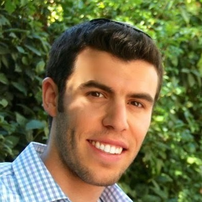 Ariel Ephrat
Research Scientist, Google DeepMind
Email: arielephrat_at_google.com
Google Scholar | Linkedin | Github
- About Me
-
I'm a Research Scientist at Google DeepMind, previously on the Perception Team at Google Research,
where I focus on turning generative AI and video understanding into real-world applications.
My work combines academic research with practical impact, contributing to Google's large-scale generative video models: Genie, Veo and Lumiere, as well as product features such as
Best Take and Speech Mode for Pixel and YouTube Shorts AI effects, alongside notable papers. I completed my PhD in 2018,
working with Prof. Shmuel Peleg as part of the HUJI Machine Perception Group.
I’m also drawn to the business side of tech. I've advised Warburg Pincus on computer vision investments, helping drive two deals, and bring perspective from my time as a startup founder. My passion lies in how innovation and value creation come together.

- Publications
-
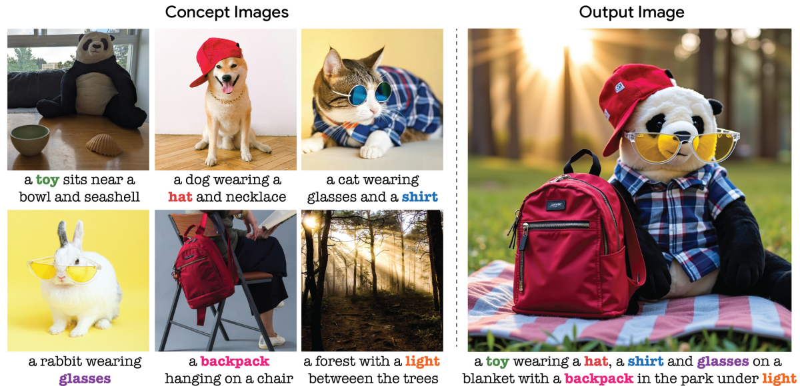 TokenVerse: Versatile Multi-concept Personalization
in Token Modulation Space
D. Garibi, S. Yadin, R. Paiss, O. Tov, S. Zada, A. Ephrat, T. Michaeli, I. Mosseri, T. Dekel
SIGGRAPH (Journal) 2025, Best Paper award
arXiv | webpage
Still-Moving: Customized Video Generation
without Customized Video Data
H. Chefer, S. Zada, R. Paiss, A. Ephrat, O. Tov,
M. Rubinstein, L. Wolf, T. Dekel, T. Michaeli, I. Mosseri
SIGGRAPH Asia (Journal) 2024
arXiv | webpage | video
Lumiere: A Space-Time Diffusion Model for Video Generation
O. Bar-Tal, H. Chefer, O. Tov, C. Herrmann, R. Paiss, S. Zada,
A. Ephrat, J. Hur, Y. Li, T. Michaeli, O. Wang, D. Sun, T. Dekel, I. Mosseri
SIGGRAPH Asia, 2024
arXiv | webpage | video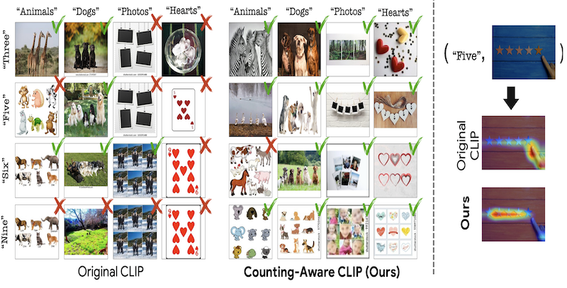 Teaching CLIP to Count to Ten
R. Paiss, A. Ephrat, O. Tov, S. Zada, I. Mosseri, M. Irani, T. Dekel
ICCV 2023
arXiv | webpage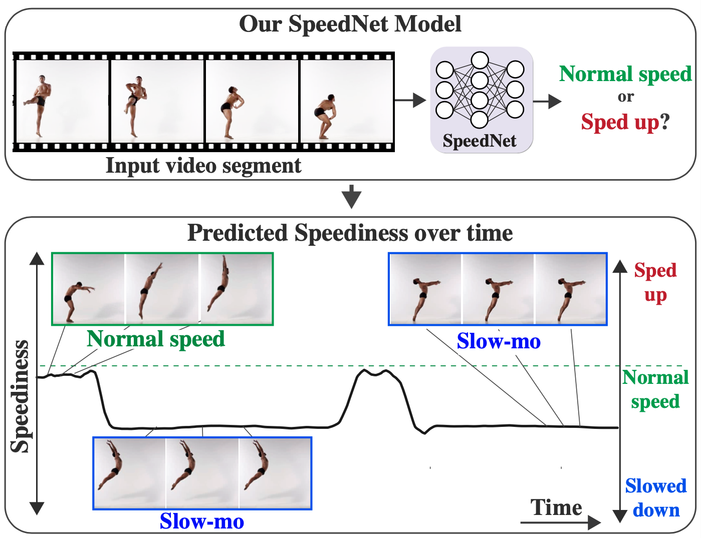 SpeedNet: Learning the Speediness in Videos
S. Benaim, A. Ephrat, O. Lang, I. Mosseri, W.T. Freeman, M. Rubinstein, M. Irani, T. Dekel
CVPR 2020, oral
arXiv | webpage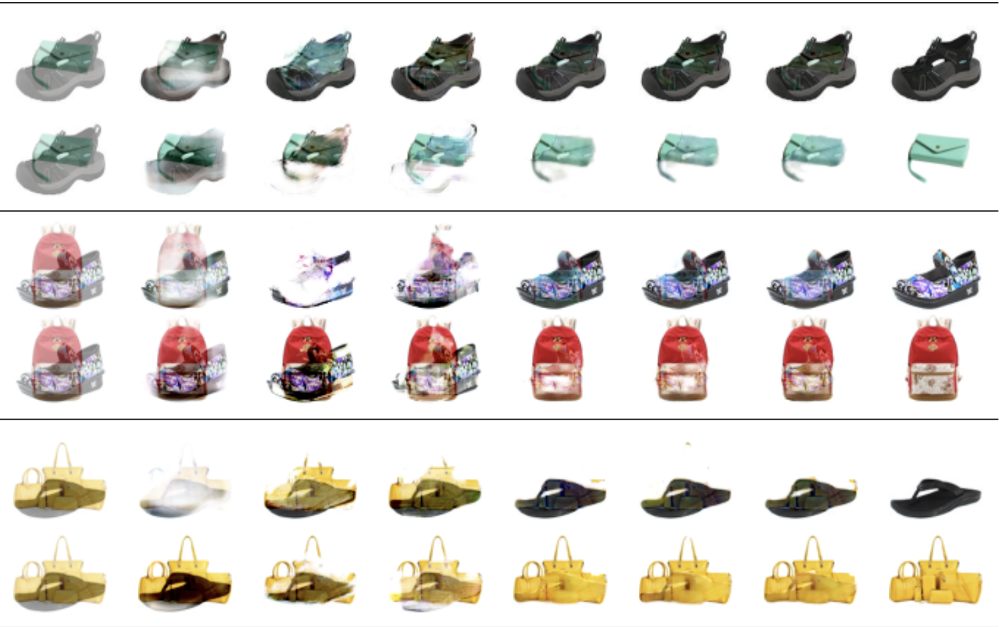 Neural Separation of Observed and Unobserved Distributions
T. Halperin, A. Ephrat, Y. Hoshen
ICML 2019
arXiv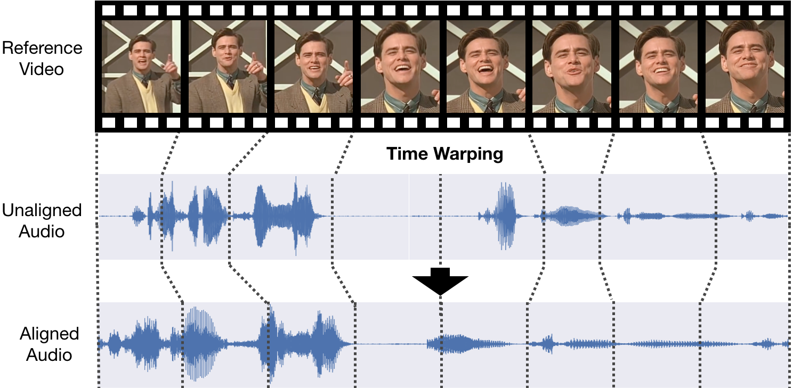 Dynamic Temporal Alignment of Speech to Lips
T. Halperin*, A. Ephrat*, S. Peleg
[* equal contribution]
ICASSP 2019
arXiv | video | code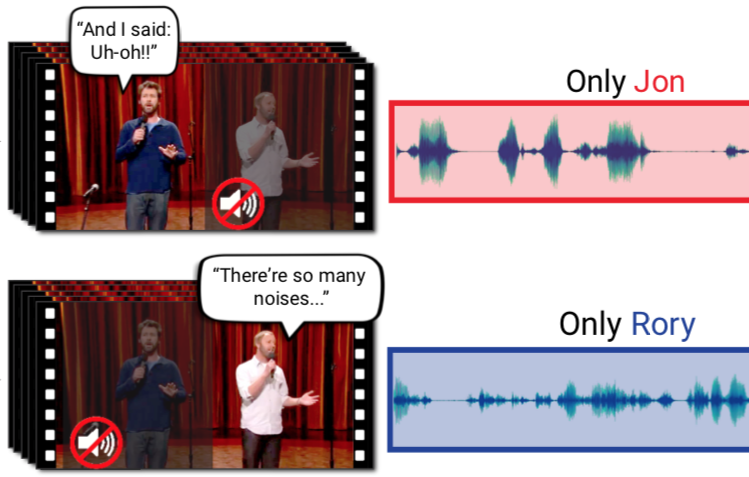 Looking to Listen at the Cocktail Party:
A Speaker-Independent Audio-Visual Model for Speech Separation
A. Ephrat, I. Mosseri, O. Lang, T. Dekel, K. Wilson, A. Hassidim, W.T. Freeman, M. Rubinstein
SIGGRAPH 2018
arXiv | webpage | video | Google Research Blog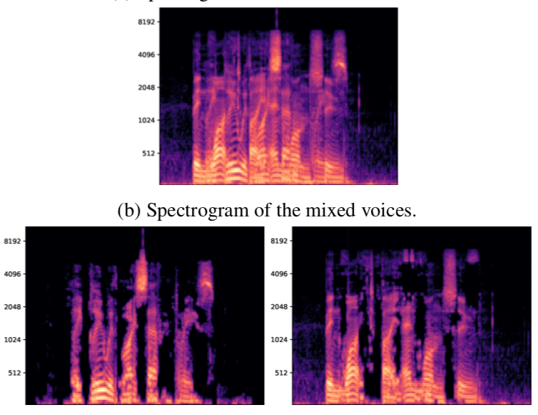 Seeing Through Noise:
Visually Driven Speaker Separation and Enhancement
A. Gabbay, A. Ephrat, T. Halperin and S. Peleg
IEEE International Conference on Acoustics, Speech and Signal Processing (ICASSP), 2018
arXiv | webpage | video | code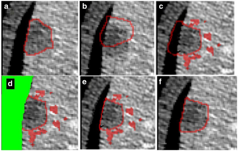 Patient-specific and global convolutional neural networks
for robust automatic liver tumor delineation in follow-up CT studies
R. Vivanti, L. Joskowicz, N. Lev Cohain, A. Ephrat and J. Sosna
Medical & Biological Engineering & Computing, March 2018
article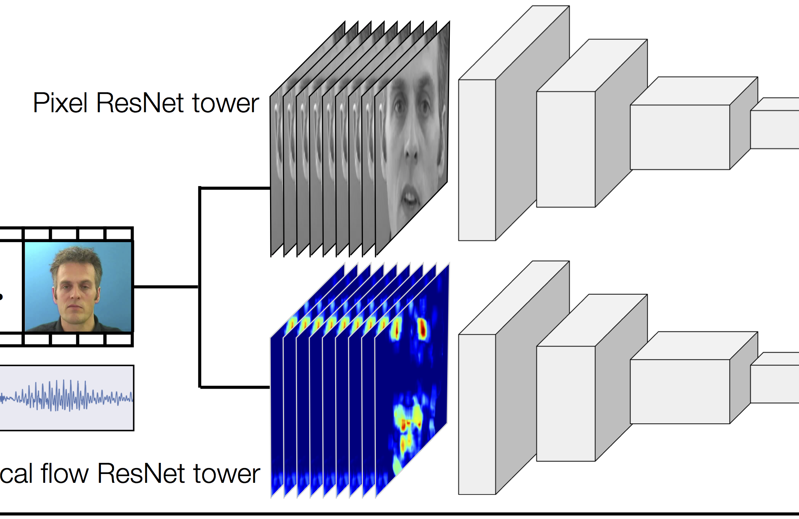 Improved Speech Reconstruction from Silent Video
A. Ephrat*, T. Halperin* and S. Peleg
[* equal contribution]
ICCV 2017 Workshop on Computer Vision for Audio-Visual Media
arXiv | webpage | video | code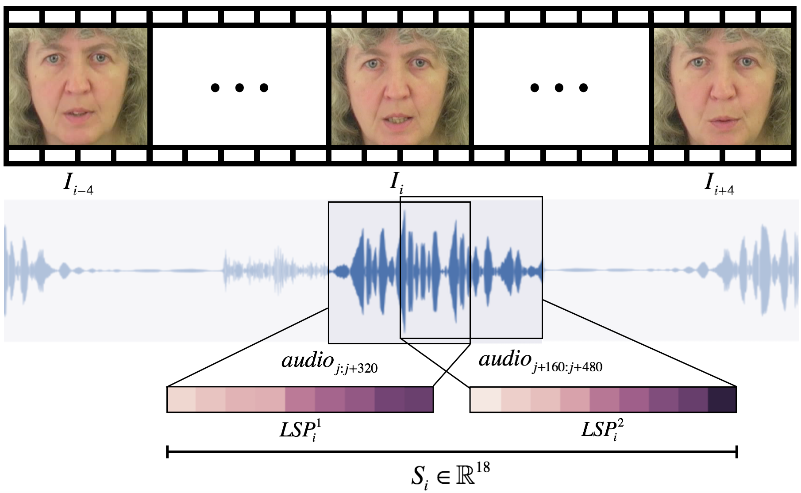 Vid2speech: Speech Reconstruction from Silent Video
A. Ephrat and S. Peleg
IEEE International Conference on Acoustics, Speech and Signal Processing (ICASSP), 2017
pdf | webpage | code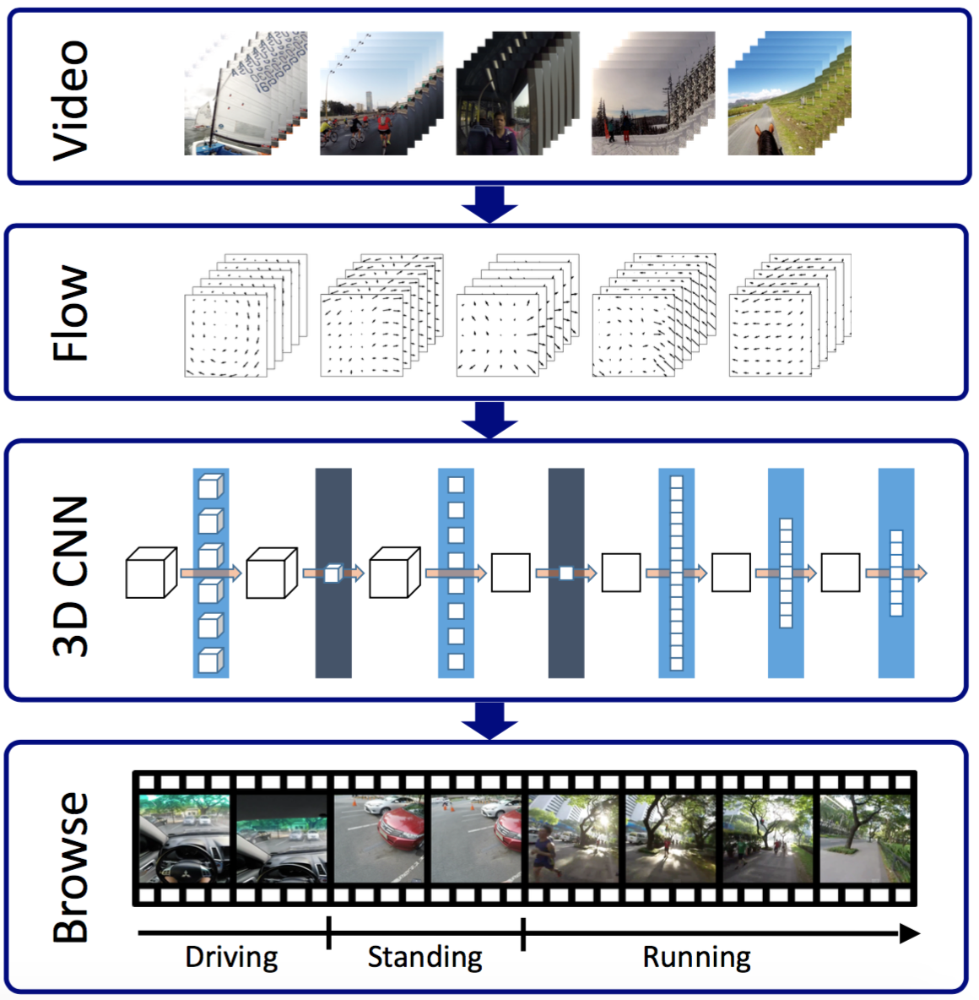 Compact CNN for Indexing Egocentric Videos
Y. Poleg, A. Ephrat, C. Arora and S. Peleg
IEEE Winter Conference on Applications of Computer Vision (WACV), 2016
pdf | webpage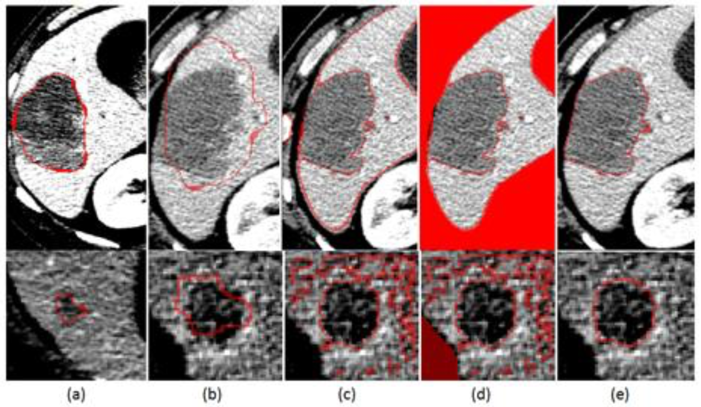 Automatic Liver Tumor Segmentation in Follow-Up CT Scans
R. Vivanti, A. Ephrat, L. Joskowicz, O.A. Karaaslan, N. Lev Cohain and J. Sosna
Proc. International Workshop on Patch-based Techniques in Medical Imaging, MICCAI, 2015
pdf
- Teaching
-
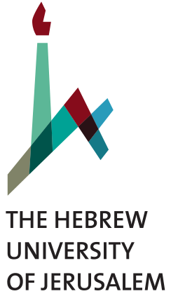 HUJI — Teaching Assistant, Digital Image Processing, 2017-18
HUJI — Teaching Assistant, Undergraduate Engineering Projects and Workshop, 2015-18
- Work
-
Google DeepMind — Research Scientist, 2024 - Now
Google Research — Software Engineer, 2018 - 2024
Google Research — Software Engineering Intern, 2017
Google — Software Engineering Intern, 2016Here a Story — Co-founder and Web Developer, 2013–2014
Research and product highlights inspired by Inbar Mosseri